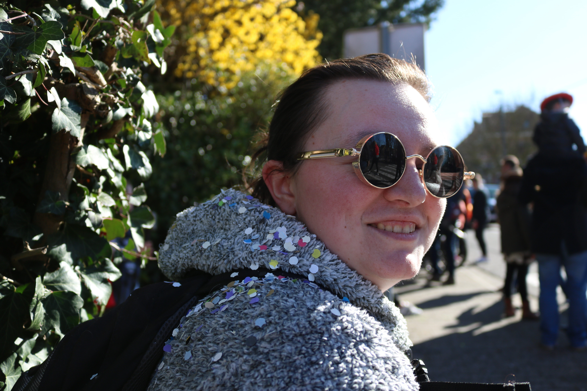

Développeuse Back-End orientée Data
FR
Aloha ! Je suis Déborah Clerckx, j'ai un intérêt énorme pour le développement web et j'adore la photographie !
J'ai suivi des études en marketing et gestion d'entreprise. Pendant celles-ci, j'ai consolidé un regard créatif de façon à concevoir l'aménagement des rayons et des vitrines. Afin d'attirer l'oeil du client par une recherche visuo-spatiale et lumineuse.

Durant et suite à ces études, j'ai travaillé dans différentes entreprises. En passant de la vente en prêt à porter, bande dessinée et autres. En tant que technicienne de surface en entreprise et en ASBL de centre de soir pour personnes adultes déficientes mentale. Egalement en tant que valoriste en ressourcerie, où je m'occupais du tri. Ainsi que de la remise en ordre d'appareils électroniques, de jeux de société et de bibelots.
Toute ces expériences m'ont permis de renforcer le travail d'équipe et d'améliorer mon adaptabilité afin d'ajouter plusieurs cordes à mon arc.
Aujourd'hui, j'essaie de lier toute mes expériences professionnelles et extra-professionnelles dans le développement Back-end. Après pas mal d'année d'écoute active pour répondre aux attentes des clients, il me tarde de voir ce qu'il se cache sous l'iceberg. J'aspire à pouvoir lier "marketing" et "développement", afin de devenir un élément passerelle entre ces 2 domaines.
Data-oriented Back-End Developer
EN
Aloha! I am Deborah Clerckx, I have a huge interest in web development and I love photography!
I studied marketing and business management. During these, I consolidated a creative look in order to design the layout of the shelves and windows. In order to attract the eye of the customer by a visual-spatial and luminous research.
During and following these studies, I worked in different companies. From the sale of ready-to-wear, comics and others. As a surface technician in a company and in a non-profit organization in the evening center for adults with mental disabilities. Also as a resourcing specialist, where I took care of sorting. As well as the ordering of electronic devices, board games and trinkets.
All these experiences have allowed me to strengthen teamwork and improve my adaptability in order to add more strings to my bow.
Today, I try to combine all my professional and extra-professional experiences in Back-end development. After quite a year of active listening to meet customer expectations, I can't wait to see what is hidden under the iceberg. I aspire to be able to link "marketing" and "development", in order to become a bridge element between these 2 areas.